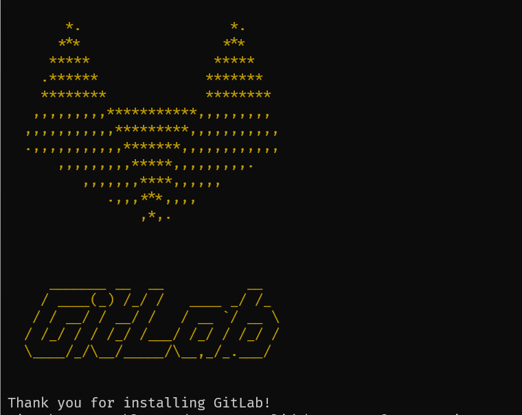
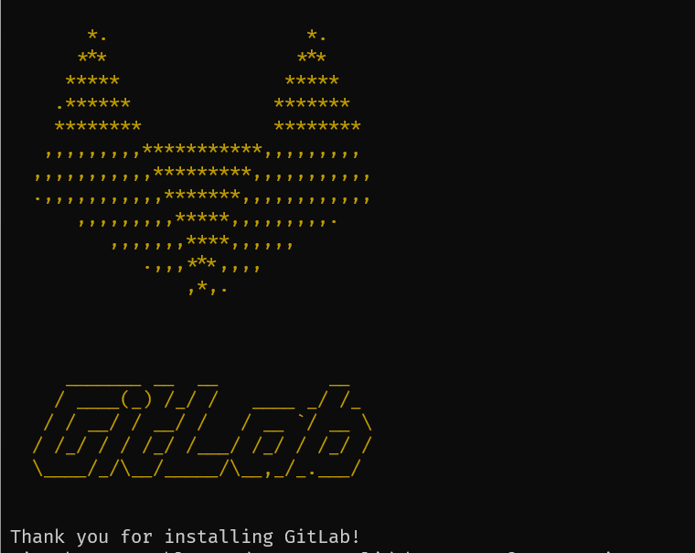
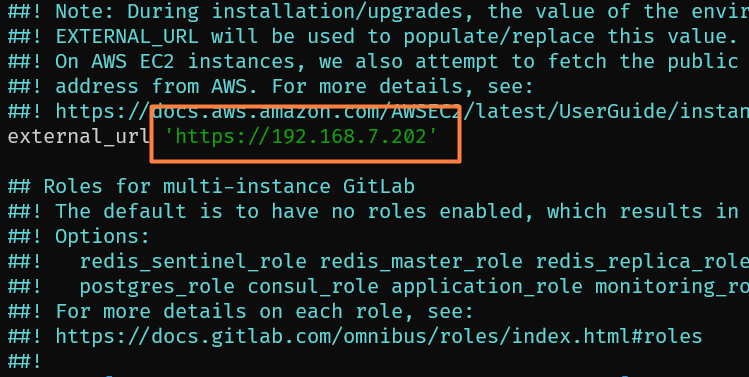

Instituto Superior de Educación Rural

Guía de instalación de gitlab-ce con postgresql no empaquetado
Contenido Gitlab
-
Paso #1:
-
Paso #2:
-
Paso #3:
-
Paso #4:
-
Paso #5:
Realizar la configuración inicial a través de la interfaz web
Contenido Postgresql
-
Paso #1:
-
Paso #2:
-
Paso #3:
-
Paso #4:
-
Paso #5:
-
Paso #6:
Reconfiguración de Gitlab
-
Paso #1:
Tutorial
Introducción
GitLab es una aplicación de código abierto que se utiliza principalmente para alojar repositorios de Git, con funciones adicionales relacionadas con el desarrollo, como el seguimiento de problemas. Está diseñada para alojarse utilizando su propia infraestructura y ofrece flexibilidad para implementarse como un almacén de repositorio interno para su equipo de desarrollo, una forma pública de interactuar con los usuarios o un medio para que los colaboradores alojen sus propios proyectos. El proyecto GitLab le permite crear una instancia de GitLab en su propio hardware con un mecanismo de instalación mínimo. Esta guía le enseñará cómo instalar y configurar GitLab Community Edition en un servidor Ubuntu. Además, le enseñará a utilizar dos servidores diferentes en el cual alojar gitlab y postgresql respectivamente.
Requisitos previos para el servidor gitlab
Para seguir esta guía, necesitará:
- Un servidor que ejecute Ubuntu.
- Un usuario root con sudoprivilegios.
- Firewall activo.
Los requisitos de hardware publicados de gitlab recomiendan utilizar un servidor con un mínimo de:
- 4 núcleos para tu CPU.
- 8 GB de RAM para memoria.
- 50 GB de almacenamiento.
Se recomienda usar volúmenes LVM para futura expansión.
Aunque es posible que funcione disminuyendo los requisitos, pero va a ser poco funcional.
Si tienes un nombre de dominio asegúrate de que apunte al servidor gitlab
Si requieres el servidor para proyectos grandes debes tener una IP pública para tu servidor, ya que asi se puede acceder a él desde intenet.
Requisitos previos para servidor Postgresql
- Un servidor Ubuntu.
- 2 núcleos para tu CPU.
- 2 GB de RAM para memoria.
- 12 GB de almacenamiento.
Paso 1: Instalar las dependencias.
Antes de instalar Gitab, y cualquier otro programa, es importante actualizar repositorios, para asi obtener las versiones mas recientes y no tener conflictos de instalación a futuro.
sudo apt update

sudo apt upgrade -y

Luego instale las dependencias ingresando este comando:
sudo apt install ca-certificates curl openssh-server postfix tzdata perl

Probablemente ya tengas parte de este software instalado. Para la postfix instalación, seleccione Sitio de Internet cuando se le solicite. En la siguiente pantalla, ingrese el nombre de dominio de su servidor para configurar cómo el sistema enviará el correo.


Ahora que tienes las dependencias instaladas, estás listo para instalar GitLab.
Paso 2: Instalar Gitlab
Con las dependencias implementadas, puedes instalar GitLab. Este proceso aprovecha un script de instalación para configurar su sistema con los repositorios de GitLab.
Primero, vaya al /tmp directorio:
cd /tmp

Luego descargue el script de instalación:
curl -LO https://packages.gitlab.com/install/repositories/gitlab/gitlab-ce/script.deb.sh

No dude en examinar el script descargado para asegurarse de que se sienta cómodo con las acciones que realizará. También puede encontrar una versión alojada del script en las instrucciones de instalación de GitLab :
less /tmp/script.deb.sh
Una vez que esté satisfecho con la seguridad del script, ejecute el instalador:
sudo bash /tmp/script.deb.sh

El script configura su servidor para utilizar los repositorios mantenidos por GitLab. Esto le permite administrar GitLab con las mismas herramientas de administración de paquetes que usa para los otros paquetes del sistema.
Una vez completado esto, puede instalar la aplicación GitLab real con apt:
sudo apt install gitlab-ce
 

Esto instala los componentes necesarios en su sistema y puede tardar algún tiempo en completarse.
Paso 3: Ajustar las reglas del firewall
Antes de configurar GitLab, debe asegurarse de que las reglas de su firewall sean lo suficientemente permisivas para permitir el tráfico web.
Habilite el firewall:
sudo ufw enable
Ahora, habilita los puertos que se van a utlizar:
sudo ufw allow http
sudo ufw allow https
sudo ufw allow OpenSSH
sudo ufw allow 5432

Dado que GitLab es una aplicación web, debe permitir el acceso HTTP. Debido a que aprovechará la capacidad de GitLab para solicitar y habilitar un certificado TLS/SSL gratuito de Let's Encrypt , permita también el acceso HTTPS.
Puedes verificar ufw statusnuevamente para asegurarte de que hayas otorgado acceso al menos a estos dos servicios:
sudo ufw status

Este resultado indica que ahora se puede acceder a la interfaz web de GitLab una vez que configura la aplicación.
Paso 4: Editar el archivo de configuración de Gitlab
Antes de poder utilizar la aplicación, actualice el archivo de configuración y ejecute un comando de reconfiguración. Primero, abra el archivo de configuración de GitLab con su editor de texto preferido. Este ejemplo utiliza nano:
sudo nano /etc/gitlab/gitlab.rb
Haga scroll hacia abajo hasta que encuentre la siguiente línea:
En esta línea debes poner el dominio de tu servidor, con el cual será encontrado a través de la web, por ejemplo https:gitlab.com o también con la ip del servidor https:192.168.1.100, o en su defecto http://192.168.1.100, note que no tiene la s en el protocolo http, ya que solo servirá de manera local, en la máquina donde esté creado el servidor.
Presione 'ctrl + w' y escriba 'letsencrypt' y presione enter para buscar por palabra.
letsencrypt['contact_emails'] = ['gitlab@example.com']
letsencrypt['enable'] = true
Esta configuración define una lista de direcciones de correo electrónico que el proyecto Let's Encrypt puede usar para comunicarse con usted si hay problemas con su dominio. Se recomienda descomentar y completar esto para informarse sobre cualquier problema que pueda ocurrir.

Una vez que haya terminado de realizar cambios, guarde y cierre el archivo. Si está utilizando nano, puede hacerlo presionando CTRL+O, CTRL+X, luego ENTER.
Ejecute el siguiente comando para reconfigurar GitLab:
sudo gitlab-ctl reconfigure

Esto inicializará GitLab utilizando la información que pueda encontrar sobre su servidor. Este es un proceso completamente automatizado, por lo que no tendrá que responder ninguna pregunta. El proceso también configurará un certificado Let's Encrypt para su dominio.
Paso 5: Realizar la configuración inicial en la interfaz web
En este punto ya podrias ingresar al dominio o IP en el navegador y encontrar el login de Gitlab.
Para ingresar, debes copiar la contraseña temporal que solo dura 24 horas para poder ingresar a la plataforma.

Para copiar la contraseña debe ir a la siguiente ruta y allí encontrarás la clave.
nano /etc/gitlab/initial_root_password

Dirígete al login e inicia sesión con usuario root y la contraseña que acabaste de copiar.

Observe que está navegando por protocolo seguro https, pero la advertencia que aparece ahí es porque no se está utilizando un nombre de dominio válido, o una IP pública. Sin embargo, si está navegando seguro.
Una vez dentro de Gitlab, ve a cambiar la contraseña por una mas corta. Para eso, ve a editar perfil.

Cambia la contraseña y guarda los cambios. Esto hace que cierre sesión inmediatamente y te pida iniciar sesión con tu nueva contraseña.

Instalación y configuración de Postgresql
Paso 1: Instalar las dependencias
Al igual que en el servidor anterior, haga uso de los comandos:
sudo apt update upgrade -y
sudo apt install openssh-server
Paso 2: Instalar Postgresql-contrib
Para la versión 17.2 que es la que se está utilizando en esta guía, se debe utilizar esta versión de Postgresql.
sudo apt install Postgresql-contrib

Paso 3: Ajustar las reglas del firewall
Active el firewall.
sudo ufw enable
Luego de iniciar el firewall, habilite los siguientes puertos:
sudo ufw allow 5432
sudo ufw allow OpenSSH
Paso 4: Editar el archivo de configuración pg_hba.conf

sudo nano /etc/postgresql/16/main/pg_hba.conf
En este archivo se va configurar la base de datos y el usuario para Gitlab.


Asegúrese de poner las lineas exactamente. Si desea que Postgresql solo escuche en una dirección, debe cambiar 0.0.0.0/0 por IP_de_su_servidor_Gitlab/32.
Paso 5: Editar archivo postgresql.conf

sudo nano /etc/postgresql/16/main/postgresql.conf

Note que en este caso está escuchando todas las direcciones.
Paso 6: Crear la DB y usuario en consola de Postgresql
Ingrese a Postgresql.

su postgres
Ahora si ingrese a la consola de Postgresql.

psql
Cree la base de datos para Gitlab.

CREATE DATABASE gitlab;
Ahora el usuario para Gitlab.

CREATE USER gitlab WITH PASSWORD 'gitlab';
Verifica que se haya creado correctamente la base de datos.

\l
Es una ele minúscula.
Ahora con el usuario.

\du
Debes darle todos los permisos al usuario gitlab.

ALTER USER gitlab WITH SUPERUSER;
Despues, debes darle todos los permisos al usuario gitlab sobre la base de datos gitlab.

GRANT ALL PRIVILEGES ON DATABASE gitlab TO gitlab;
Ingresa el comando para salir de la consola de Postgresql.
\q
Reinicia Postgresql.
sudo service postgresql restart
Reconfiguración de Gitlab para la conexión
Vuelve al servidor Gitlab y accede a su archivo de configuración.
sudo nano /etc/gitlab/gitlab.rb
Presiona las teclas CTRL+W y escribe gitlab_rails['db_adapter'] y presiona enter.

Descomenta todas las líneas que ves en la imagen, y cambia los datos según corresponda.
- En 'db_database' debes poner el nombre de la base de datos que creaste en el servidor Postgresql.
- En 'db_username' y 'db_password' debes poner el nombre de usuario y contraseña del usuario gitlab del servidor Postgresql.
- El 'db_host' es la dirección IP o dominio del servidor Postgresql.
- y por último, 'db_port' es el puerto del servidor Postgresql.
Presiona CTRL+O enter, y CTRL+X enter para salir del archivo.
Realiza una prueba de conexión con el servidor Postgresql ingresando el siguiente comando, seguido de la contraseña.

psql -U gitlab -W -h ip_servidor_postgresql
Si has seguido todos los pasos correctamente debería estar funcionando todo.
Escribe el comando, y escribes yes.

sudo gitlab-rake gitlab:setup
Vuelve a reconfigurar Gitlab para que los nuevos cambios se actualicen.
sudo gitlab-ctl reconfigure
No se preocupe si le aparece este error. Es normal, debido a que la IP o dominio que se le agregó en el archivo de configuración de Gitlab https://192.178.1.100 ya tenía un certificado letsencrypt.

Ingresa a la consola de Gitlab. Despues de acceder, ingresa los siguientes comandos todos al mismo tiempo y presiona enter para cambiar la contraseña de Gitlab.
Asegúrate de poner una constraseña segura TuContraseña123@ porque de lo contrario saldrá un error en este paso.

sudo gitlab-rails console
user = User.where(id: 1).first
user.password = 'new-password-here'
user.password_confirmation = 'new-password-here'
user.save!
Presiona CTRL+C para salir de la consola.
Una vez terminado esto, ya puedes iniciar sesión exitosamente, teniendo Gitlab en un servidor y su base de datos Postgresql en otro servidor diferente.

Note el error que apareció cuando intenté ingresar con la antigua contraseña. (En la captura ya había ingresado mis nuevas credenciales) Ingresa las credenciales y accede nuevamente. Dentro podrás configurar llaves SSH para tus repositorios, cambiar el nombre de usuario root, entre muchas cosas mas.
¡Esto ha sido todo por esta guía!
Contacta a los desarrolladores para ofrecerles trabajo